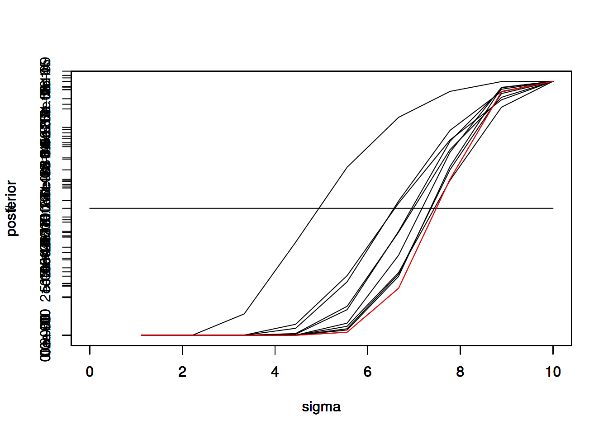

dpois(2, 1)[1] 0.18393971/5 matches rate, \(\lambda = 0.2\)
\(\lambda = 1\)
dpois(2, 1)[1] 0.1839397dpois(5,1)[1] 0.003065662dpois(0,1)*dpois(0,1)[1] 0.1353353dpois(0,1)^4[1] 0.018315640.2*(dpois(0,1)^9)[1] 2.468196e-05\(1 - p(\mathrm{1\ or\ 0\ floods\ occur})\)
1 - ppois(0.1, 0.01)[1] 0.009950166\(\mathrm{Beta\ distribution\ for\ prior,\ } \mu = 0.10 = \frac{\alpha}{\alpha + \beta}\)
\(\beta = 0.9\alpha \mathrm{,\ as\ integers\ } \beta = 18 \mathrm{\ and\ } \alpha = 2\)
plot.new()
curve(dbeta(x, shape1=2, shape2=18), from=0, to=1)
Posterior for Beta distribution
\(\alpha' = 2 + 2 = 4 \mathrm{\ and\ } \beta' = 18 + 10 - 2 = 26\)
plot.new()
curve(dbeta(x, shape1=2, shape2=18), from=0, to=1)
curve(dbeta(x, shape1=4, shape2=26), from=0, to=1, col='red', add=TRUE)
\(\mu' = \frac{\alpha'}{\alpha' + \beta'} = \frac{4}{4 + 26}\)
integrate(dbeta, 0.15, 0.25, shape1=4, shape2=26)0.3031957 with absolute error < 3.4e-15x_values <- seq(0,1,length.out = 100)
beta_densities <- dbeta(x_values, shape1=4, shape2=26)
plot.new()
curve(dbeta(x, shape1=2, shape2=18), from=0, to=1)
curve(dbeta(x, shape1=4, shape2=26), from=0, to=1, col='red', add=TRUE)
shade_indices <- which(x_values >= 0.15 & x_values <= 0.25)
polygon(c(x_values[shade_indices], rev(x_values[shade_indices])), c(beta_densities[shade_indices], rep(0, length(shade_indices))), col="red", border=NA)
In 2017 Hurricane Harvey (Texas) and Hurricane Irma (Florida) made landfall in the eastern U.S.
Since 2000 there have been 61 Atlantic Basin hurricanes reaching Category 4 or Category 5. Most hurricanes do not make landfall. An even smaller percentage of hurricanes that make landfall hit the U.S.
| Year | Cat 4-5 | Landfall | LF USA |
|---|---|---|---|
| 2000 | 2 | 0 | 0 |
| 2001 | 2 | 2 | 0 |
| 2002 | 1 | 0 | 0 |
| 2003 | 2 | 0 | 0 |
| 2004 | 4 | 1 | 1 |
| 2005 | 5 | 3 | 0 |
| 2006 | 0 | 0 | 0 |
| 2007 | 2 | 2 | 0 |
| 2008 | 4 | 2 | 0 |
| 2009 | 1 | 0 | 0 |
| 2010 | 4 | 0 | 0 |
| 2011 | 2 | 0 | 0 |
| 2012 | 0 | 0 | 0 |
| 2013 | 0 | 0 | 0 |
| 2014 | 1 | 0 | 0 |
| 2015 | 1 | 1 | 0 |
| 2016 | 2 | 1 | 0 |
| 2017 | 4 | 3 | 2 |
| 2018 | 2 | 1 | 1 |
| 2019 | 2 | 1 | 0 |
| 2020 | 5 | 3 | 1 |
| 2021 | 2 | 1 | 1 |
| 2022 | 2 | 1 | 1 |
| 2023 | 3 | 0 | 0 |
| 2024 | 4 | 2 | 1 |
| 2025 | 4 | 1 | 0 |
13/28 of Category 4-5 hurricanes made landfall since 2017, and 7/13 Category 4-5 hurricanes that have made landfall hit the U.S.
\(\lambda = 7 \mathrm{\ hurricanes}/9 \mathrm{\ years} = 0.78\)
dpois(2,7/9)[1] 0.1389621According to https://www.conservation.ca.gov/cgs/earthquakes/big there have been 49 earthquake in or near the state of California since 1925.
\(\lambda = 49 \mathrm{\ earthquakes}/100 \mathrm{\ years} = 0.49\)
So, for 1 year and for 20 consecutive years
dpois(0, 0.49)[1] 0.6126264dpois(0, 0.49)^20[1] 5.54516e-05library(greybox)Package "greybox", v2.0.6 loaded.x <- seq(-10,10,length.out=1000)
pdf_g <- dnorm(x, 0, 2)
plot(x, pdf_g, type="l")
scale = sqrt(2)
pdf_l <- dlaplace(x, 0, scale)
par(new=T)
plot(x, pdf_l, type="l", col="red")
library(pracma)#uniform distribution
sigma <- seq(0,10, length.out=10)
fl <- dunif(sigma, 0, 10)
plot(sigma,fl,type="l")
variance = 4
sd = sqrt(variance)
samples <- rnorm(10, 10, sd)
for (sample in samples) {
likelihood <- (1/sqrt(2*pi*(sigma^2)))*exp(-((sample^2)/(2*(sigma^2))))
posterior <- likelihood * fl
evidence <- trapz(posterior)*0.1
post <- posterior/evidence
par(new=T)
plot(sigma, posterior,type="l")
fl = posterior
}
par(new=T)
plot(sigma,posterior,type="l",col="red")
library(pracma)#uniform distribution
lambda <- seq(0,5, length.out=10)
prior <- c(dunif(lambda, 0, 5)[1:5],dunif(lambda, 0, 5)[1:5])
plot(lambda,prior,type="l")
rate = 2
samples <- rexp(10,rate)
for (sample in samples) {
likelihood <- lambda*exp(-lambda*sample)
evidence <- trapz(likelihood*prior)*0.2
posterior <- likelihood*prior/evidence
par(new=T)
plot(lambda,prior,type="l", xlim=c(0,5))
prior <- posterior
}
par(new=T)
plot(lambda,posterior,type="l", xlim=c(0,5), col="red")
summary(samples) Min. 1st Qu. Median Mean 3rd Qu. Max.
0.01876 0.11832 0.17124 0.26569 0.26082 1.05484 summary(posterior) Min. 1st Qu. Median Mean 3rd Qu. Max.
0.00000 0.02811 0.57117 0.53853 0.97659 1.19530 library(pracma)samples = runif(10)
prior = rnorm(10, 1.5, 0.5)
a = 0
b = max(prior)
plot(0, b, xlim=c(0,10), ylim=c(0,4))
for (i in 1:length(samples)) {
likelihood <- 1/(b-a)
evidence <- ((1/samples[i]) + (1/(b-a)))/2
posterior <- likelihood*prior/evidence
b <- max(posterior)
prior <- posterior
par(new=T)
plot(i, b, xlim=c(0,10), ylim=c(0,4))
}
samples = runif(10)
prior = rnorm(10, 1.5, 0.5)
a = 0
b = max(prior)
plot(0, b, xlim=c(0,10), ylim=c(0,4))
for (i in 1:length(samples)) {
likelihood <- 1/(b-a)
evidence <- ((1/samples[i]) + (1/(b-a)))/2
posterior <- likelihood*prior/evidence
b <- max(posterior)
prior <- posterior
par(new=T)
plot(i, b, xlim=c(0,10), ylim=c(0,4))
}